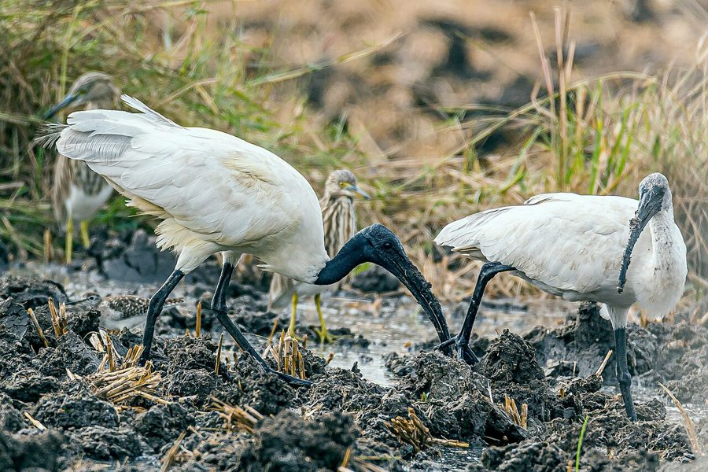

मुंडाBlack-headed Ibis
Threskiornis melanocephalus · Threskiornithidae · BRD-0078

- Scientific nameवैज्ञानिक नाम
- Threskiornis melanocephalus (Pennant, 1769)
- Familyकुल
- Threskiornithidae
- Hindiहिंदी
- मुंडा / सफ़ेद बुज़ा
- Local namesस्थानीय नाम
- munda, mundia, safed buza, safed buja, kachatore
- Status hereयहाँ की स्थिति
- native
- Movementआवागमन
- Resident, here all year
- IUCNIUCN
- VU
- Reviewसमीक्षा
- audited and independently read
When to look कब देखें
Present all year.साल भर मौजूद।
Uses and possibilities उपयोग और संभावनाएँ
Drawn from the documented uses in the profile below, where each is labelled traditional, current or a research lead. All uses →
Tell it apart from इनसे अलग पहचानें
मुंडा / Black-headed Ibis
Threskiornis melanocephalus (Pennant, 1769) — Threskiornithidae
मुंडा — पूर्वी उत्तर प्रदेश की आर्द्रभूमियों में एक मध्यम आकार की सफेद चिड़िया, जिसका सिर और गर्दन पूरी तरह काली (नंगी) हैं। इसकी लंबी, धनुषाकार, काली चोंच मिट्टी और पानी में किलकारियों, केंचुओं, और अन्य कीड़ों को निकालने के लिए बिल्कुल सही है। ये सामूहिक रूप से घोंसले बनाते हैं और अक्सर बड़ी कॉलोनियों में देखे जाते हैं।
Quick Identification त्वरित पहचान
| Feature | Description |
|---|---|
| Size | Medium-sized ibis; 68–76 cm tall |
| Plumage | Pure white body; black head and neck (bare skin) |
| Head | Completely bare black skin extending to upper breast |
| Bill | Long, curved downward, black |
| Legs | Greenish or yellowish-green |
| Eyes | Yellow or pale iris |
| Behaviour | Feeds in flocks; probes ground and water |
Field tip: A medium-sized white bird with a completely black, bare head and long curved bill — is a Black-headed Ibis. The bare head is unmistakable and visible from a distance. Walk of groups in open grassland or at water edges while probing.
हिंदी — कैसे पहचानें:
सफेद शरीर, पूरी तरह काला सिर और गर्दन।
लंबी, धनुषाकार काली चोंच।
झुंड में चलते हैं।
धान के खेत और घास के मैदान में खोदते हैं।
Morphology आकारिकी
Biometrics:
| Measurement | Range |
|---|---|
| Total length | 680–760 mm |
| Wing (flattened chord) | 340–395 mm |
| Tail | 180–220 mm |
| Bill | 155–175 mm |
| Tarsus | 75–95 mm |
| Weight | 680–900 g |
Size: 68–76 cm tall; wingspan 105–125 cm. Weight 680–950 g.
Plumage: Pure white except head and neck. Head and upper neck are bare black skin (unfeathered) — a distinctive feature. The black extends from the crown down to the upper breast.
Bill: Long, distinctly curved downward ("sickle-shaped"); black colour. Perfectly adapted for probing into soft mud and vegetation.
Legs: Greenish to yellowish-green; medium length.
Eyes: Yellow or pale iris, dark pupil.
Breeding plumage: Becomes more intense white during breeding season; bare head skin may darken.
Sexes: Identical. Juveniles duller, with greyer head and more feathered areas.
Vocalisations. Three main call types:
- Contact and alarm call: A loud, harsh croak — fraank or kraark — similar to herons; frequency 0.8–2.0 kHz.
- Courtship call: Low, soft grunting and hissing at the nest, particularly during pair formation.
- Territorial call: Loud nasal honking from prominent roosts, maintaining group cohesion and territory.
हिंदी: तेज़, भारी गर्जन जैसी आवाज़। झुंड में आवाज़ें सुनाई देती हैं।
Ecological Role पारिस्थितिक भूमिका
Invertebrate specialist: Black-headed Ibises feed on a variety of wetland invertebrates and small vertebrates:
- Earthworms and larger soil fauna
- Aquatic insects and nymphs (especially grasshoppers, crickets)
- Crabs and freshwater mollusks
- Frogs and tadpoles (occasionally)
- Small fish and snakes
Probing forager: Uses its long, curved bill to probe soft substrates. Often feeds in flocks, moving systematically through grassland and wetland margins.
Pest control: Feeds heavily on grasshoppers and crickets in paddy fields and grasslands, providing significant agricultural benefit.
Habitat indicator: The presence of Black-headed Ibises indicates wet grasslands, marshy areas, and functioning flood-prone systems.
Colonial nester: Heronries often include ibises alongside herons and storks, enriching nutrient cycling.
हिंदी: यह केंचुए, कीड़े, केकड़े, और छोटी मछलियाँ खाता है। धान के खेत में बहुत मददगार है।
Life Cycle / Phenology जीवन चक्र
Resident: Present year-round in eastern UP; no migration.
Breeding: June–November (monsoon and post-monsoon). Colonial nester.
Nesting: Platform nest of sticks in tall trees, usually in mixed heronries with storks, herons, and egrets. Trees: tamarisk, peepal, banyan, neem.
Eggs: 3–4 pale greenish eggs. Both parents incubate ~21 days.
Chicks: Altricial; fed by both parents. Fledge at ~5 weeks.
Roosting: Communal roosts in large groups; hundreds may gather in tall trees near water.
Foraging: Often seen in large flocks moving through wet grasslands and paddy fields.
हिंदी: पूरे साल रहता है। मानसून में प्रजनन करता है। बड़े झुंड में शिकार करता है।
Prey भोजन
| Prey | Hindi | Capture Method |
|---|---|---|
| Earthworms | केंचुए | Probing in soil |
| Grasshoppers and crickets | टिड्डे, झींगुर | Gleaning from plants and ground |
| Aquatic insects | जल कीड़े | Probing in water and mud |
| Freshwater crabs | केकड़े | Extraction from burrows |
| Tadpoles and frogs | टैडपोल, मेंढक | Shallow water gleaning |
हिंदी: मिट्टी और पानी में चोंच डालकर केंचुए, कीड़े निकालता है।
Conservation Status संरक्षण स्थिति
IUCN Status: Vulnerable (VU)
Wildlife Protection Act, 1972: Listed under Schedule IV (Protected) of the Wildlife (Protection) Act, 1972, as amended in 2022. Killing or harming a Black-headed Ibis is illegal in India.
Threats: Drainage of wetlands and grasslands; conversion to agriculture; pollution; pesticide use; disturbance at colonies. The species has declined significantly across India in the past 50 years.
Conservation importance: Eastern UP remains an important stronghold for Black-headed Ibis populations in India. Wetland protection here is critical for species survival.
हिंदी: यह पक्षी संरक्षित है और दुर्लभ हो रहा है।
Agricultural / Human Relevance कृषि और मानव संबंध
Grasshopper and cricket control: Black-headed Ibises provide significant natural pest control in paddy fields and grasslands during the monsoon season, feeding on crop-damaging insects.
Beneficial farming indicator: The presence of ibis flocks indicates well-functioning wetland and grassland ecosystems, which are increasingly rare in agricultural landscapes.
Declining cultural protection: Unlike storks and cranes, ibises have no strong local cultural protection. Some farmers may view them neutrally or see them as competitors.
हिंदी: यह टिड्डों और कीड़ों को खाता है — खेती के लिए अच्छा है। लेकिन इसके घोंसलों की सुरक्षा कम हो रही है।
Expected Locally स्थानीय रूप से अपेक्षित
Not a field record. Written from published accounts for eastern Uttar Pradesh. No confirmed local sighting yet — if you have seen it, that is what the atlas needs.
अभी तक स्थानीय पुष्टि नहीं। यह विवरण प्रकाशित स्रोतों से है।
Common year-round across Basti district, particularly in areas with wet grasslands, marshes, and rice paddies. Look for flocks moving through grassland margins and feeding in recently harvested paddies. Active heronries with dozens of Black-headed Ibis nests are reported along the Ghaghra and Rapti river systems during the monsoon season.
Distribution वितरण
Global range: Widespread across the Indian subcontinent and Southeast Asia, from Pakistan through India, Nepal, Bangladesh to Myanmar.
In India: Found throughout the plains and some hilly areas, particularly in the Gangetic region.
In Uttar Pradesh: Once common throughout UP; now concentrated mainly in the eastern districts and protected wetlands.
In Basti district / eastern UP: Present year-round, though populations have declined. Major populations associated with the Ghaghra and Rapti river systems.
Research Questions शोध प्रश्न
Anyone can investigate these | कोई भी इन प्रश्नों की जाँच कर सकता है
- How large are ibis flocks and where do they feed? / कितने बड़े झुंड में खाना खोजते हैं? — Count flocks in grasslands monthly.
- Which heronries have Black-headed Ibis colonies? / कौन से पेड़ों पर घोंसले हैं? — Map active colonies in breeding season.
- What is their diet composition by season? / मौसम में क्या खाते हैं? — Observe and document feeding activity.
- Do they feed differently in paddies vs grasslands? / खेत और घास में अलग तरीके से खाना खोजते हैं? — Compare foraging behaviour.
- How has their population changed in your area? / पिछले 10 साल में संख्या में बदलाव? — Interview elders about historical abundance.
Similar Species मिलती-जुलती प्रजातियाँ
| Species | How to tell apart | हिंदी |
|---|---|---|
| Red-naped Ibis | White with red patch on head (not fully bare); smaller | सफेद सिर पर लाल धब्बा |
| Painted Stork | Larger; painted plumage (not white); different head pattern | रंगीन; बहुत बड़ा |
| Asian Woolly-necked Stork | Larger; dark plumage; white neck patch | काला बड़ा सारस |
Field rule: A medium-sized white bird with a completely bare black head and long curved bill, feeding in flocks — is a Black-headed Ibis. The bare head is definitive.
Taxonomy & Classification वर्गीकरण
Original description. Threskiornis melanocephalus was described by Thomas Pennant in 1769 in his Indian Zoology as a form of ibis. Type locality: India. The genus Threskiornis contains the "sacred ibis" group found across the Old World.
Subspecies. Monotypic — no subspecies are currently recognised.
Family and order placement. Order Pelecaniformes, family Threskiornithidae (ibises and spoonbills), containing approximately 36 species worldwide. The genus Threskiornis contains 5 species of black-headed ibises found across the Old World.
Phylogenetic notes. Threskiornis melanocephalus is sister to the Middle Eastern T. aethiopicus (Sacred Ibis). Both share the characteristic bare head structure among Threskiornis species.
IUCN status rationale. Assessed as Vulnerable (VU). The global population is declining due to rapid wetland loss and degradation across the Indian subcontinent. Eastern UP retains important populations that are crucial for the species' survival in India.
Photo Gallery फोटो गैलरी
फोटो निर्देश: घास के मैदान और तालाब के किनारे झुंड में आसानी से दिखते हैं। प्रजनन काल (जुलाई-सितंबर) में घोंसले पर फोटो लें।
Photos needed आवश्यक फोटो
- [ ] Flock feeding in grassland (झुंड खेत में)
- [ ] Close-up of bare head and bill detail (सिर क्लोज़-अप)
- [ ] In flight showing white plumage (उड़ान में)
- [ ] Heronry with nesting colony (घोंसलों की कॉलोनी)
- [ ] Probing in mud (कीचड़ में खोदते हुए)
No photos yet — add field photos to media/species/black_headed_ibis/ and run node scripts/sync_photos.js.
Atlas Connections संबंधित प्रजातियाँ
- Red-naped Ibis — close relative; occasionally found in same flocks
- Painted Stork — shares heronries and wetland habitat
- Sarus Crane — shares grassland and wetland habitat
References संदर्भ
- Pennant, T. (1769). Indian Zoology. Henry Hughs, London. [original description]
- Ali, S. & Ripley, S.D. (1987). Handbook of the Birds of India and Pakistan. Vol. 1. Oxford University Press, New Delhi.
- Grimmett, R., Inskipp, C. & Inskipp, T. (2011). Birds of the Indian Subcontinent. 2nd ed. Christopher Helm, London.
- Sundar, K.S.G., et al. (2010). Conserving Asian Ibises: status, threats and suggested actions. Biological Conservation, 143(9), 2313–2318.
- BirdLife International (2023). Threskiornis melanocephalus. IUCN Red List of Threatened Species.
- GBIF Occurrence Data — Threskiornis melanocephalus, India (2024).
Source file: species/fauna/birds/black_headed_ibis.md